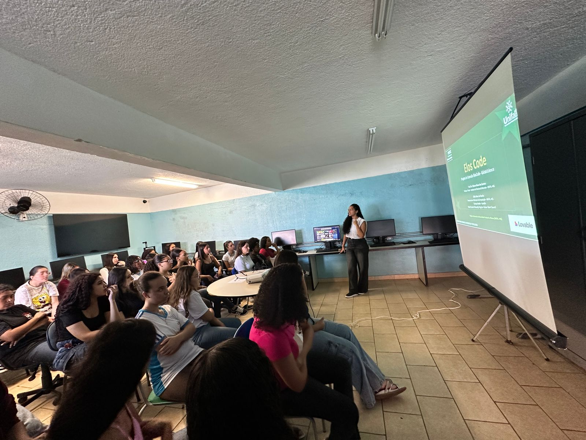

Projeto de extensão · UNIFAL-MG
Empoderando a próxima geração de mulheres na tecnologia
O Elos Code liga a escola pública ao ecossistema global de tecnologia. Com formação imersiva em IA e Ciência da Computação, nossas alunas ganham autonomia técnica e preparo acadêmico.
- 09
- meses, de fevereiro a novembro
- 36
- sessões semanais
- 06
- estudantes com mentoria próxima
- UNIFAL
- parceira na extensão acadêmica
A ponte que estamos construindo
O Elos Code não é só sobre Python. É sobre criar um espaço seguro para estudantes da E.E. Padre José Grimminck explorarem IA, desenvolverem lógica e se prepararem para o mercado global.

A jornada de aprendizado
A receita do Elos Code
Três passos em sequência, pensados para construir confiança e competência.
Ingredientes
- 6 alunas do ensino médio da rede pública
- 36 encontros semanais
- Mentoras da UNIFAL-MG e da rede internacional
- Um computador com acesso à internet
- Muita curiosidade
Modo de preparo
-
Fundamentos de Computação. A base para todo o resto.
- Lógica de programação
- Algoritmos
- Pensamento computacional
-
IA e tecnologia do futuro. Hora de construir aplicações reais.
- Python
- Ferramentas de desenvolvimento assistido por IA
- Um projeto próprio por aluna
-
Estratégia acadêmica. Preparação para a universidade.
- Reforço em Matemática
- Redação para o ENEM
- Inglês para oportunidades internacionais
Por que isso importa
No Brasil, só 15% dos profissionais de tecnologia são mulheres. Em comunidades vulneráveis, esse número é ainda menor. Muitas dessas meninas nunca viram uma desenvolvedora parecida com elas.
O Elos Code não ensina apenas código. Ele mostra que a tecnologia também é para elas. Construímos pontes entre comunidades excluídas e as oportunidades que a tecnologia oferece.
Cada aula é um passo para um futuro mais inclusivo. Cada aluna que constrói seu primeiro app prova que talento existe em todo lugar. Só falta a oportunidade certa.
Construindo pontes em Alfenas, uma linha de código por vez.
Quer se envolver?
Você pode ser mentora, patrocinar ou fazer parceria. Há um lugar para você nessa missão.